Программирование PIC-контроллеров фирмы Microchip
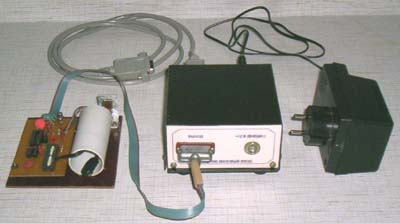
Программатор PIC-контроллеров
Для конструирования устройств на PIC-контроллерах [2] необходимо иметь программную среду, позволяющую разрабатывать внутреннюю программу контроллера, а также программатор, чтобы записать разработанную программу в контроллер. Программатор сконструирован на основе комплекта устройств, описание которого приведено на сайте LancOS [1] (PonyProg), и подробно рассмотренного в [4]. Программатор состоит из базового блока, подключаемого к компьютеру через COM-порт, и набора адаптеров для различных микросхем.
Базовый блок
Схема принципиальная базового блока приведена на рис. 1, внешний вид - на рис. 2, вид на монтаж - на рис. 3.
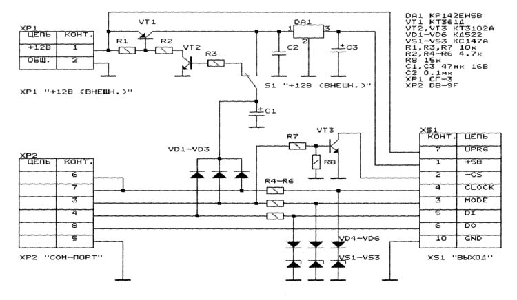
Рис. 1. Схема электрическая принципиальная базового блока программатора PIC-контроллеров (переключатель S1 в положении "+12В (ВНЕШН.)"
Базовый блок может получать питание от линий COM-порта компьютера или внешнего источника напряжением +12 вольт. Для получения напряжения +5 В используется линейный стабилизатор DA1 (микросхему КР142ЕН5А, В желательно подобрать с минимальным током потребления). Цепочки R4 - R6 VD4 - VD6 VS1 - VS3 обеспечивают преобразование уровней напряжения COM-порта компьютера в TTL-уровни.
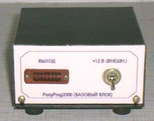 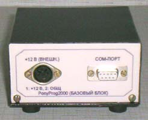
Рис. 2. Внешний вид базового блока программатора PIC-контроллеров (габаритные размеры 60 х 100 х 100 мм3).
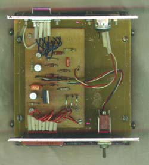
Рис. 3. Вид на монтаж базового блока программатора PIC-контроллеров.
Источник напряжения +12 вольт
Для питания базового блока от сети может использоваться любой сетевой адаптер с выходным напряжением +12 вольт. Возможная схема приведена на рис. 4. Понижающий трансформатор может быть рассчитан с помощью программы Transformer [3].
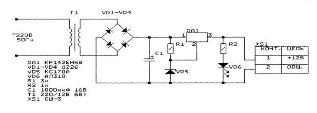
Рис. 4. Схема электрическая принципиальная блока питания с выходным напряжением +12 В.
Адаптеры
Схема адаптера для подключения PIC-контроллеров PIC12C50x, PIC16F8x и PIC16F87x показана на рис. 5, а внешний вид на рис. 6. По аналогичной схеме могут строиться адаптеры и для других типов PIC-контроллеров (с использованием соответствующих выводов микросхемы, предназначенных для ее питания и программирования).
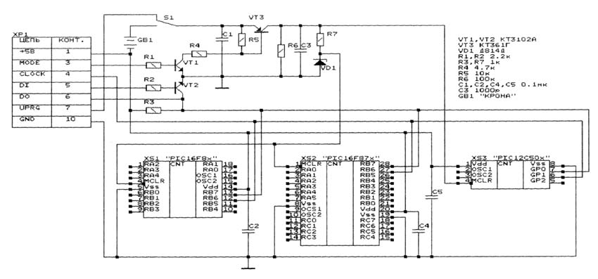
Рис. 5. Схема электрическая принципиальная адаптера для подключения PIC-контроллеров PIC12C50x, PIC16F8x и PIC16F87x к базовому блоку програматора.
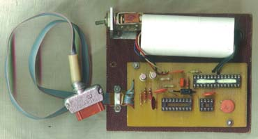
Рис. 6. Внешний вид адаптера для подключения PIC-контроллеров PIC12C50x, PIC16F8x и PIC16F87x к базовому блоку программатора. Размеры печатной платы: 90 х 50 мм2.
Программное обеспечение
Для работы с программатором можно использовать программу PonyProg, различные free-версии которой имеются на сайте LancOS [1]. После установки программы выбирается порт, к которому подключен программатор и производится калибровка временных интервалов в зависимости от быстродействия используемого компьютера. После этого программа готова к совместной работе с программатором. Данные, предназначенные для записи в контроллер, могут находиться в файлах различных типов, в частности, в hex-файлах (file.hex).
Разработку программ для PIC-контроллеров удобно вести с помощью пакета MPLAB IDE, free-версии которого можно скопировать на сайте фирмы Microchip [2].
Проверка программатора
Для проверки программатора использовалась простая схема на PIC-контроллере PIC16F84A-04/P, показанная на рис. 7, 8 (можно применить любой другой PIC-контроллер с соответствующими изменениями в подключении и в программе). Листинг пробной программы, с помощью которой осуществляется мигание светодиода с частотой примерно 1 Гц, приведен на рис. 9. Программа разработана и оттранслирована в hex-файл в среде MPLAB IDE, версия 5.70.20. Архив проекта: Prob_Prog.rar (~6 Кбайт).
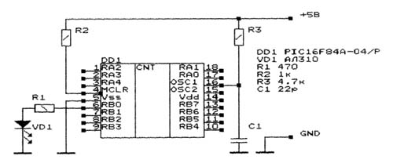
Рис. 7. Простая схема на PIC-контроллере для проверки программатора.
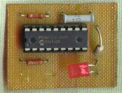
Рис. 8. Внешний вид схемы на PIC-контроллере для проверки программатора.
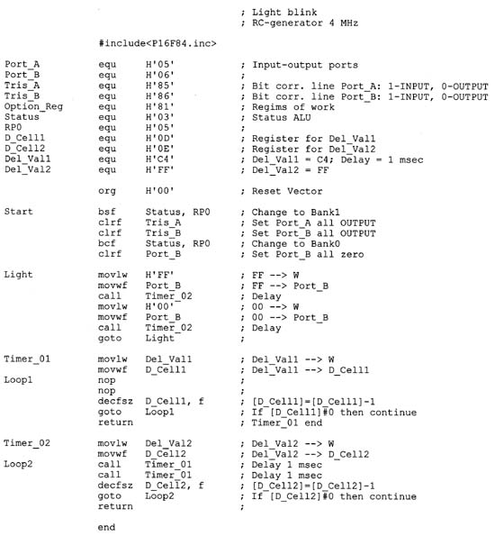
Рис. 9. Листинг пробной программы.
Hex-файл пробной программы:
:020000040000FA
:1000000083168501860183128601FF308600132046
:100010000030860013200528C4308D000000000049
:100020008D0B0E280800FF308E000C200C208E0B4C
:040030001528080087
:00000001FF
Hex-файл может быть получен при трансляции в среде MPLAB IDE или при необходимости набран вручную с помощью любого текстового редактора.
Ссылки:
01.12.2005
21.06.2010
Альтернативные источники
энергии
Компьютеры и
Интернет
Магнитные поля
Механотронные системы
Перспективные
разработки
Электроника и технология